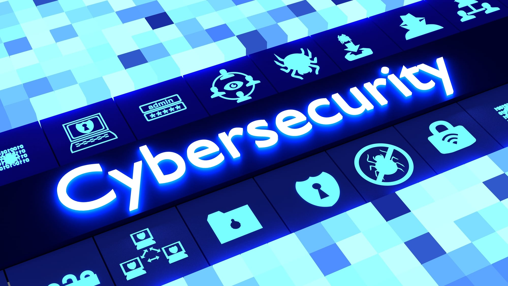

What is Cybersecurity ?
Cybersecurity or information technology security is a kind of protection which keep your computer hardware and software out of harmful things such as viruses or hacker. Moreover, it also helps computer stop services from being disruption and misdirection while working.
The reason for the appearance of Cybersecurity :
Due to the development, we have been created so many new types of technology like wireless network and smart devices. On the contrary, it helps people to access to information very easy which is a benefit for hacker to take their personal information. In addition, cybersecurity is now the most important major that all the technology experts have to focus and stop information theft.
Some categories of Cybersecurity:
- Network security
- Application security
- Information security
- Operational security
- Disaster recovery and business continuity
- business continuity and End-user education
These division allow us to realize the type of damage in order to provide proper solution to every problem.
The history of Cybersecurity:
Surprisingly, cybersecurity just has been focussed in 2014 by Andersson and Reimers. They found that their employees not only hate to care about protecting their organization information but also stop people from doing it for them. This has created a massive hole in information secure and this should be changed by five steps: pre-evaluation, strategic planning, operative planning, implementation and post-evaluation. Moreover, this problem has developed in to worldwide threat and rising in very fast pace.
The figure:
In the first nine month of 2019, 7.9 billion of files have been recorded to be exposed according to RiskBased Security. It also two times bigger (112%) than the figure at the same time in 2018. In the next three years, the world may cost about 133.7 billion of dollar to solve the cybersecurity problem. This number may rise more if we delay and ignore the damage causing by cyber threat. Besides many threats like malware, phishing, denial – of – service attack happens so commonly. There is some news threat which have been recorded by U.S, U.K, Australia government like dridex malware, emotet malware and romance scams. They can track the information of user to steal their password and spread it out very fast. In 2019, FBI reported 114 victims has been attacked by romance scams and they have lost total 1.6 million of dollar which affect a lot to their financial.
Alternative protection:
To protect our information, technology experts have created many other ways beside using password or pin code. First, biometrics has been used widely recently. Our fingerprints, irises, face are being used to avoid people to access to our devices if we lost it. Second, some company like Apple provide a special feature for their phone user. If their phone is stolen, they can use another phone to shut the other down forever and back up the data on the other. Those are ways to avoid information theft but there are no optimize ways because each way has different weakness and it can be break.
Therefore, avoid cyber-attacking is not only a mission of business but also a mission for every people. Some simple tips we should remember to protect our information efficiently like changing password regularly every month, make sure your password is strong enough and hard to find out, use trust-worthy anti-virus software, avoid opening spam email because it could transfer virus to your computer.
The impact of Cybersecurity:

For this development, if we can enhance our information protection due to the new type of cybersecurity, we won’t worry about virus, malware or hacker anymore. In these days, information is very important not only for a person but also for a country. It can affect widely from the range of financial to war for a simple information about the price of petrol or the disagreement in policy. Therefore, information security must be put on top priority. We need a lot of engineering about security to enhance the protection. Surprisingly, many businesses and governments allow hackers to help them improve the security system because they know how to access in to security hole and also fix the bug. These changes are being used widely around the world with the help of searching tools. They mostly use very young hackers with have the average old is 12. We have heard that kids found the security hole in Facebook or Google operating system which has been approved inaccessible by many experts. However, it can still be broken and these company get these kids to work for them instead of letting them fall in to crime. By this change, technologies will be developed more as well as more jobs will be appeared to support cybersecurity. In addition, people who work in these fields will get a lot of respect and also a wealthy paid job. Job which inhibit and damage the security will slowly get rid of by the trend of the world.
How Cybersecurity affect to myself and peple:
With the help of news security, I can make sure that no one can access to my phone, read my message or see my picture and private information. They have to use my fingerprints, irises or my face. However, these still not very good and may have mistake so you shouldn’t let anyone use your phone without your permission. Not only phone has been installed these kinds of protection but also computer, especially laptop. Asus and Apple are the pioneers in using biometrics instead of password. And I totally agree with these changes because it will keep my information safe and keep out of danger at good at possible. I used to use password such as pin code or pattern but it can be track and remember easily. In addition, I adapt to change and now I use fingerprints in all of my devices. However, my families still found it very hard to use biometrics. My mother and father still using password. It is very dangerous because people tend to create password base on their personal information like name or date-of-birth. In addition, some hacker can access to your phone easily and can steal your information which can use it to fight against you or use it like a blackmail. Therefore, we must check our phone and change password regularly every month to avoid leaking information because hackers can take that to do harm to you and your families.